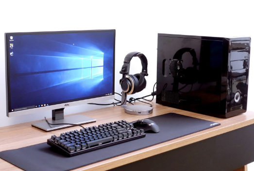

Tecnologia > Inovações
Computadores
O que é
O computador é uma ferramenta eletrônica desenvolvida para processar dados, armazenar informações e executar tarefas do nosso dia a dia. Seja para estudar, trabalhar, acessar a internet ou se divertir, ele funciona como uma ponte entre as nossas ideias e o mundo digital através de comandos simples de teclado e mouse.

Google Glass
Uma nova maneira de ver o mundo.
Principais Tipos
Hoje em dia, os computadores aparecem em diversos formatos para atender a diferentes necessidades. Os mais conhecidos são os Desktops (computadores de mesa fixos com gabinete e monitor separado), os Notebooks (portáteis e com bateria) e os Tablets/Smartphones, que também funcionam como pequenos computadores de bolso.
Como funciona
Um computador opera combinando duas partes essenciais: o Hardware (as peças físicas, como tela, teclado, memória e processador) e o Software (os programas e aplicativos). Quando você clica em um ícone, o sistema operacional interpreta sua ação e envia ordens para as peças realizarem a tarefa na tela.
Dominar a informática básica abre portas para criar documentos de texto, navegar em sites de notícias, enviar e-mails, gerenciar finanças pessoais em planilhas, realizar videochamadas com familiares e amigos e aprender novos conteúdos totalmente online.